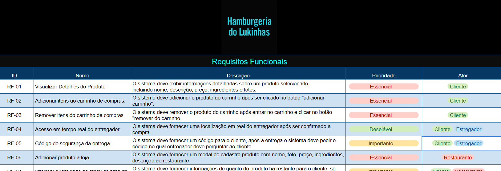
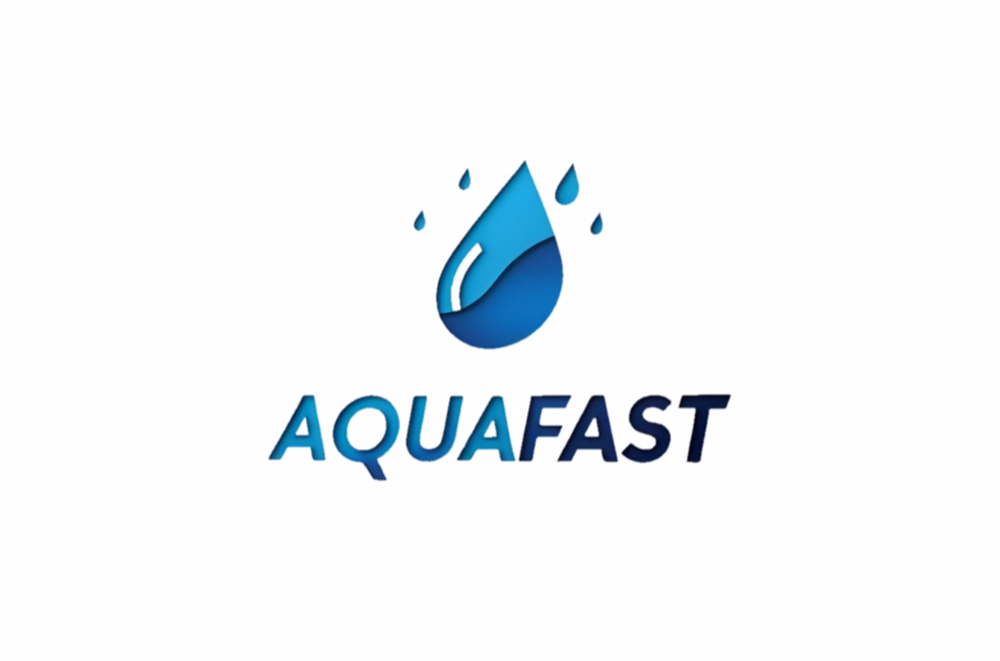
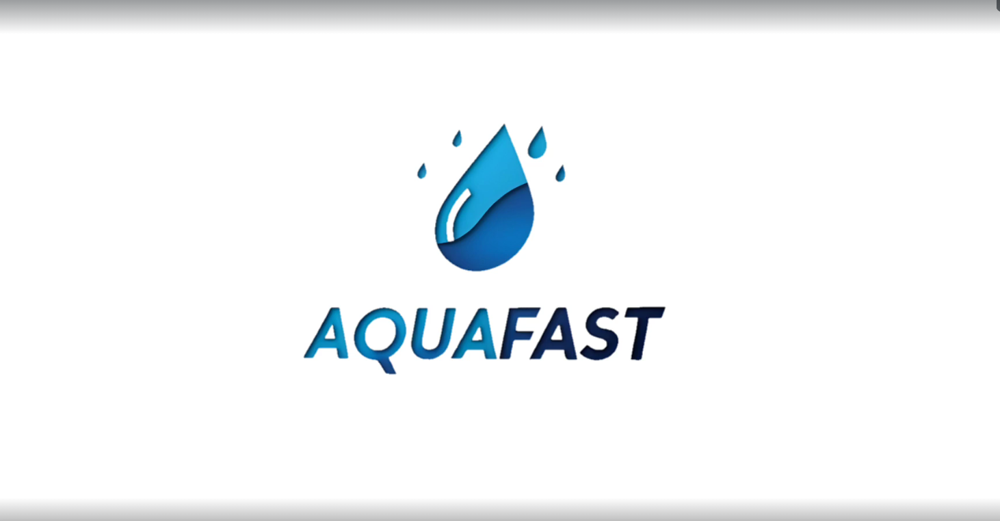
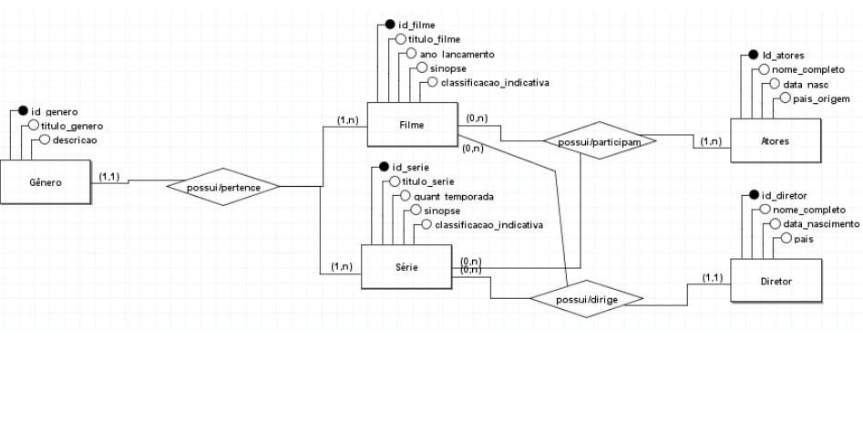
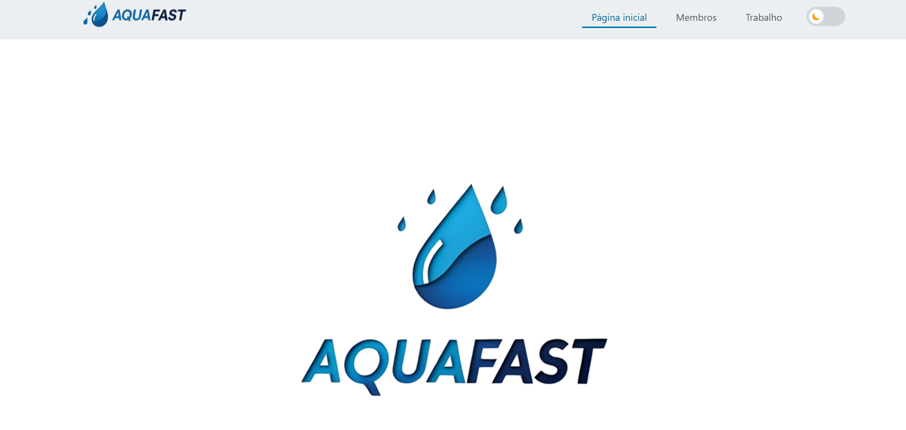

Matéria
Nesta atividade, foi disponibilizado o espaço para entrega da planilha da atividade da hamburgueria. A atividade tem como objetivo aplicar conceitos fundamentais da análise e modelagem de sistemas. (H4, H7 & H8) Link
Nesta atividade, foi explicado que a AV1 será composta de forma integrada, considerando as cinco entregas de modelagem realizadas ao longo da nossa Situação de Aprendizagem (SA) geral. Essa abordagem permite uma avaliação mais completa do nosso conhecimento sobre os temas trabalhados até o momento. (H1, H2, H3, H4, H6 & H7) Link
Nesta aula, trabalhamos na apresentação do guia de marca da S.A, organizada no formato de um pitch. O foco foi estruturar os principais elementos do projeto: identificação do problema a ser resolvido, explicação da solução inovadora e definição da entrega final (como site, aplicativo ou sensores). Também elaboramos a paleta de cores, logo, slogan, além dos requisitos funcionais e não-funcionais com documentação de apoio. Por fim, desenvolvemos protótipos de baixa e alta fidelidade (no Figma) para demonstrar de forma visual e impactante como a solução proposta pode transformar a realidade do cliente. (H1, H2, H3, H4, H5, H6 & H7) Link
Nesta aula, criamos no BrModelo um modelo entidade-relacionamento para um Sistema de Gestão de Filmes e Séries, com as entidades Filme, Série, Ator/Atriz, Diretor e Gênero, seus atributos e relacionamentos, organizando a estrutura para um futuro banco de dados. (H1, H2, H3 & H4) Link
Site da versão para computadores completo. (C1, H5, H6, H7 & H10) Link
